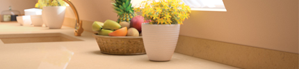
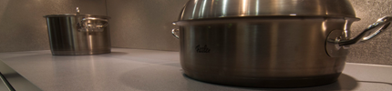

國際認證
ISO9001
ISO9001是品質管理系統的國際認證標準，COMPAC通過法國國際檢驗局SA認證。這項認證使您在選購產品時更具信心，因為它展現了我們的成就並且承諾我們將會維持一貫的專業方式擁續經營。
GREENGRARD
通過GREENGUARD及GREENGUARD Children&School認證，能確保您使用的COMPAC產品不會散發任何有害人體或環境的有毒汙染物質及氣體，是有助於創造更健康安全室內環境的高優質產品。
NSF
NSF認證由美國國家衛生基金會發行認可，COMPAC全色系產品通過NSF第51項認證，是可直接與各種食物做接觸的衛生安全材質，令您在處理時能更安心、健康。
Alimentary Contact Certificate
所有COMPAC康沛石產品遵守歐盟法規EC1935/2004，被認證為可與食物接觸之材料設備。
Classification of construction products and building elements of fire performance
認證的COMPAC康沛石產品是委託AFITI-LICOF防火測試中心測試，測試條款是依據IMO Resolution A.653 裡的MSC 61 FTPC做表面可燃性測試 。
US GREEN BUILDING COUNCIL
USGBC(美國綠色建築理事會)是個致力於發展綠色建築的非營利組織，其目的在宣導改變建築物的設計、建造及營運，透過高效率及環保節能的方式，使整個社會環境能維持繁榮及健康的永續發展。
產品規格
長度 X 寬度
3050mm X 1400mm
3300mm X 1630mm (部分商品)
厚度
12mm、20mm
重量
12mm: 150kg
20mm: 210kg
測試數據下載

表面處理
-
( NEW ) 霜紋面 Glacé
消光的自然表面,平滑柔順且不易留手紋。
-

光滑面Polished
平順光滑的表面，散發天然光澤且清潔容易。
- 
蛋殼面Ovo
霧面質感，並搭配像絲絨般觸感的仿蛋殼表面。
前緣處理
2公分厚
3公分厚
4公分厚
保養維護及注意事項
為使您的產品長期使用仍維持良好狀態，請配合正確的使用與適當的維護
在檯面上切割肉品或果菜等食材時，請使用粘板。
避免讓任何強力化學品直接接觸檯面，若不小心接觸，請迅速以大量清水沖洗。
避免用重物或尖銳物直接撞擊檯面，損害其表面完整性。
預防熱灼傷，請於放置熱鍋時使用隔熱墊或有橡膠墊之三角架保護檯面。
勿使產品直接暴露於含紫外線燈光，如殺菌燈等的照射之下。
勿將點燃的香菸直接放置於檯面上。
不可直接踩踏於檯面上。
由於COMPAC康沛石卓越的物理及化學特性，只需定期以中性清潔劑或肥皂清潔，再以清水沖洗後用乾布拭乾或以廚房紙巾將水分吸乾。
保固服務
感謝您購買COMPAC康沛石英石實體面材產品。台灣代理商秉持著值得信賴的專業精神，您所購買安裝的COMPAC康沛石產品將會讓您享受到最佳的品質保證及完善的售後服務，令您免除後顧之憂。 除了永久服務保證外，更提供安裝後第一年免費施工保固服務。
保固範圍
- 1.產品因為製造上的失誤而產生損壞。
- 2.於2013年後在台灣購買且作為住家用途之COMPAC康沛石產品。 (產品須由代理商認可之加工商施工安裝且貼附COMPAC商標)
- 3.非因天然災害或火災等不可抗力之因素所導致的產品損害。
- 4.非因人為使用不當因素所導致之產品損傷。
注意事項（下列情形下所產生的瑕疵與損壞不適用保固）
- 1.使用強酸強鹼接觸產品。
- 2.將加熱過的鍋具直接置於產品上。
- 3.放置過重物品或直接踩踏商品。
- 4.使用殺菌燈等含紫外線燈光直接照射產品。
- 5.以利刃或尖銳物品直接敲擊產品。
- 6.產品因改變原始安裝地點而自行移動過。
- 7.因保養不當而導致產品出現汙漬及變色。
- 8.本產品由天然石英礦製程，故每批實品顏色或有些許不同，此為正常現象。